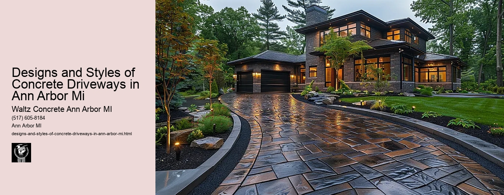

News
Concrete Driveway Installation Ann Arbor Mi
Concrete Driveway Installation Ann Arbor Mi
Choosing the right contractor for installation
Cost of concrete driveway installation in Ann Arbor
Permit requirements for driveway installation in Ann Arbor
The process and timeline of concrete driveway installation
Different types of concrete used in driveways
Maintenance and Repair of Concrete Driveways in Ann Arbor Mi
Maintenance and Repair of Concrete Driveways in Ann Arbor Mi
Preventive maintenance tips for durability
Common causes for concrete driveway damage
Professional companies offering repair services in Ann Arbor
Doityourself versus professional repairs
Costs associated with repairing a concrete driveway
Designs and Styles of Concrete Driveways in Ann Arbor Mi
Designs and Styles of Concrete Driveways in Ann Arbor Mi
Popular design trends for driveways
Considering climate factors when choosing a design or style
Unique customizations available for concrete driveways
Influence of home architecture on driveway design
Stamped stained and decorative options
Environmental Impact of Concrete Driveways in Ann Arbor Mi
Environmental Impact of Concrete Driveways in Ann Arbor Mi
Carbon footprint associated with concrete production
Use of sustainable materials in concrete driveways
Drainage considerations to reduce environmental impact
Local regulations regarding environmentally friendly driveways
Potential use of permeable or porous pavement
Alternatives to Concrete Driveways in Ann Arbor Mi
Alternatives to Concrete Driveways in Ann Arbor Mi
Asphalt driveways and their proscons
Paver stone driveways and their benefitsdrawbacks
Gravel or crushed stone as an alternative option
Comparing costs between different driveway materials
Resinbound surfaces as emerging technology
About Us
Contact Us

Designs and Styles of Concrete Driveways in Ann Arbor Mi
Designs and Styles of Concrete Driveways in Ann Arbor Mi
Designs and Styles of Concrete Driveways in Ann Arbor, MI
Concrete driveways are an essential part of a home's exterior. They play a significant role in enhancing the curb appeal while providing a smooth surface for vehicles. In this essay, we will explore various designs and styles of concrete driveways popular in Ann Arbor, Michigan. The diversity in style is sure to cater to everyone's tastes, from the traditional homeowner to those with more modern sensibilities.
Firstly, lets consider the standard brushed concrete driveway that has been a staple in many American homes for decades. This design boasts durability and practicality with its simple yet functional aesthetic. Brushed concrete is created by dragging a broom across the surface of the wet concrete which leaves behind small ridges that provide texture and anti-slip properties - perfect for battling Michigans icy winters.
For homeowners wanting something more aesthetically pleasing without compromising on durability, stamped concrete driveways offer an exciting alternative. Stamped concrete mimics other materials like brick, stone or slate but at a fraction of their cost. With numerous patterns available such as herringbone or cobblestone coupled with color options ranging from reds to browns and grays; it provides endless customization possibilities that can complement any architectural style prevalent in Ann Arbor.
Another popular choice among residents of Ann Arbor is exposed aggregate concrete. This style involves exposing the gravel or stones within the cement giving it a rugged yet sophisticated look reminiscent of granite or marble. Its textured finish not only adds visual interest but also creates an anti-skid surface making it safe for walking and driving during snowy conditions.
A relatively new entrant into the world of driveway design is decorative or colored concrete. Homeowners can choose from various colors embedded directly into the material during mixing process resulting in vibrant driveway surfaces that mirror personal aesthetics rather than sticking to traditional gray tones.
Lastly, polished concrete driveways are gaining popularity due to their sleek and modern appeal. This design involves grinding the concrete's surface to a high gloss finish that reflects light, creating a visually striking appearance. It requires regular maintenance but is an excellent choice for homeowners looking for a contemporary look.
While these are the most popular styles of concrete driveways in Ann Arbor, residents often get creative and mix different styles together to create unique designs that fit their homes aesthetic perfectly.
In conclusion, concrete driveways have evolved from simple utilitarian surfaces into crucial elements of home design. They offer versatility in form and function that caters to various tastes and preferences. Whether you prefer the traditional brushed style or wish to experiment with stamped or colored variants, there is no shortage of options available in Ann Arbor, Michigan. With careful planning and execution, your driveway can add significant value and curb appeal to your property.
Concrete Driveway Installation Ann Arbor Mi
Designs and Styles of Concrete Driveways in Ann Arbor Mi
Frequently Asked Questions
What are the popular design styles for concrete driveways in Ann Arbor, MI?
Popular designs include traditional brushed concrete, stamped or textured concrete, colored concrete, exposed aggregate and interlocking pavers. The design choice often depends on personal preference and budget.
Are there specific local regulations or codes in Ann Arbor, MI that I should be aware of when planning a concrete driveway?
Yes, local building codes may dictate minimum width, thickness of the concrete, drainage plan etc. Its always important to check with your local city council or hire a professional contractor who is knowledgeable about these regulations.
How does weather or climate in Ann Arbor, MI affect the durability of different types of concrete driveway styles?
Weather can have significant effects on the lifespan of a driveway. For example, freeze-thaw cycles can cause cracks in concrete over time. Some options like stamped concrete and interlocking pavers might handle this better than others.
What is the average cost for installing a new concrete driveway in Ann Arbor, MI?
The cost varies depending on factors like size of the driveway and style chosen but generally it ranges from $5-$10 per square foot for standard gray slab to more than $15 per square foot for decorative options like stamping or staining.
How long does it typically take to install a new concrete driveway in Ann Arbor Mi?
Installation time depends on various factors such as size and complexity of project but typically it takes 1-2 days to pour and finish the concrete followed by up to one week for curing before you can drive on it.
Designs and Styles of Concrete Driveways in Ann Arbor Mi